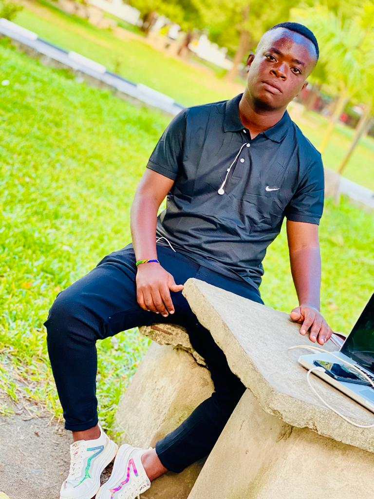

Welcome to the Masanula family website
Experience very smooth web animation from this website
Where our story lives forever ❤️
About Us
The Masanula family is united, loving, and rooted in tradition. This blog is our home to share stories, photos, and connect with relatives near and far.
Our origin traces back to the hehe people (tribe) of Tanzania. The following are the overview of who are the hehe people
The Hehe people, or Wahehe, are a Bantu-speaking ethnic group found primarily in the Iringa Region of south-central Tanzania. Their homeland lies across the rolling highlands south of the Great Ruaha River, where fertile soils and moderate climates favor both farming and livestock keeping. The Hehe speak Kihehe, a language closely related to other Bantu tongues of the Southern Highlands, such as Kibena. The origin of the name “Hehe” is believed to have come from the sound of a war cry heard by their enemies and later adopted as the name of the group.
Latest Posts
Grandma's Life Story
Read about the inspiring journey of the matriarch of our family.
Picha za Familia
Baba na Mama
Hawa ni mama na baba ambao wameilea familia yetu kwa upendo, hekima, na bidii. Tunawapenda sana ❤️
Kaka
Huyu ni kaka tunayemtazamia, mwenye moyo wa upendo na mfano bora kwa familia yetu üëè
Kerry

Kerry ni mtoto wa pili katika familia hii yenye watoto watatu
Christina

Huyu ni Dada tunayemtazamia, mwenye moyo wa upendo kwa familia yetu üëè
scroll down to continue exploring
With this kinds of animations i can make your website very refreshing and alive as well for professional work please contact me ; 0793353159. Vodacomtz.